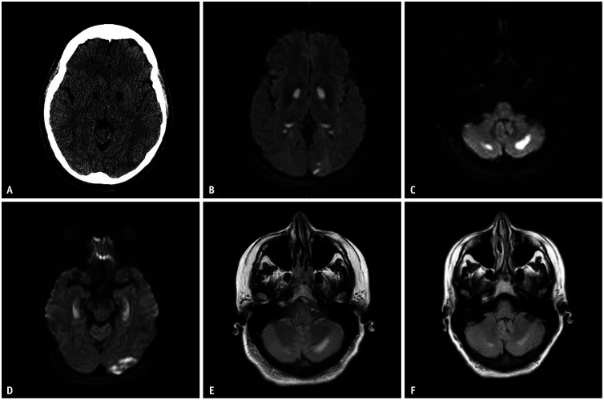
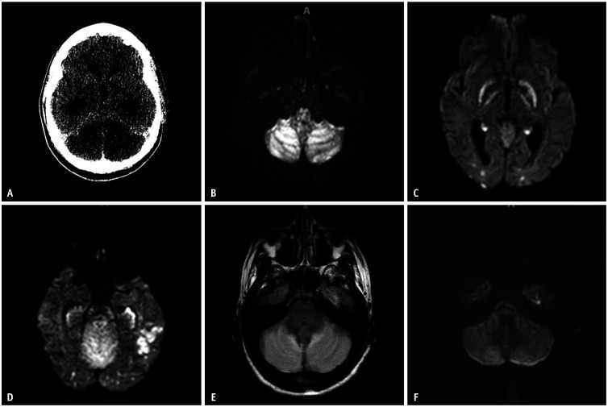
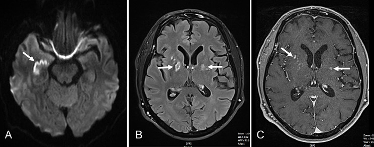

3101 — Hội chứng CHANTER: phù tạm thời tiểu não – hải mã – nhân nền sau opioid / Cerebellar, Hippocampal and Basal Nuclei Transient Edema with Restricted diffusion
Tags: pattern:han-che-khuech-tan pattern:ton-thuong-doi-xung pattern:phu-nao vung:nao vung:tieu-nao protocol:MRI-DWI protocol:CT-so-nao
Mức chắc chắn (certainty): tổng hợp y văn (literature synthesis) — loạt ca nguyên văn đầu tiên 6 ca (PMC6757017, 2019), loạt 3 ca có ảnh DWI/CT (PMC10912496, Korean J Radiol 2024), loạt 3 ca AJNR 2022 (PMC9575414), một ca có ảnh SWI xuất huyết (PMC11265104), và một ca 2026 diễn tiến thành OAS (PMC12934230). Không có thử nghiệm ngẫu nhiên; ngưỡng điều trị là đồng thuận thực hành.
Câu chốt: CHANTER là bệnh não do opioid/nhiễm độc, hình ảnh "ba tầng": tiểu não hai bên + hải mã hai bên + nhân nền (thường bèo nhạt/globus pallidus) hạn chế khuếch tán, kèm phù tiểu não gây não úng thủy tắc nghẽn. Khác với HIE (tiên lượng xấu), CHANTER hồi phục được nếu nhận ra và giải áp kịp: loạt đầu tiên 6 ca hồi phục tốt sau can thiệp sớm (PMC6757017); loạt KJR 3 ca cho thấy tín hiệu DWI đảo ngược trong vài ngày–1 tháng (PMC10912496). Bỏ sót = gán nhãn HIE, tiên lượng tử vong, ngừng điều trị oan.
1. Tổng quan bệnh học – cơ chế hình ảnh (TẠI SAO)
1.1 Sinh lý bệnh: hai đòn bẩy "độc + thiếu oxy" trên tế bào dễ tổn thương
- Opioid (và các chất pha trộn) gây ức chế hô hấp → thiếu oxy toàn thể, đồng thời độc trực tiếp lên ty thể → giảm ATP. Hai cơ chế cộng hưởng trên quần thể tế bào thần kinh giàu thụ thể opioid: hải mã (trí nhớ) và tiểu não (thăng bằng), cộng thêm nhân nền (PMC10912496; PMC11265104).
- TẠI SAO hạn chế khuếch tán: thiếu ATP → bơm Na⁺/K⁺ ngừng → nước vào nội bào (phù độc tế bào) → khoảng ngoại bào hẹp lại → DWI tăng tín hiệu, ADC giảm. Đây là phù độc tế bào, khác phù mạch máu (vasogenic) của PRES (ADC tăng).
- TẠI SAO tiểu não phù gây não úng thủy: hố sau là khoang kín; phù tiểu não hai bên xóa não thất IV → tắc dòng dịch não tủy → giãn não thất bên (úp ngược) → giảm tri giác, tụt khe, thoát vị. Loạt KJR: ca 1 có xóa não thất IV + giãn não thủy, phải mở sọ dưới chẩm + đặt EVD, rút EVD ngày 10 (PMC10912496).
- TẠI SAO hồi phục: tổn thương là phù chức năng, không phải nhồi máu; tín hiệu DWI đảo ngược sau 3 ngày (ca 1) tới 1 tháng (ca 3) (PMC10912496); FLAIR có thể tồn tại lâu hơn, đặc biệt ở tiểu não → di chứng nhận thức (PMC12934230).
1.2 Số liệu và mốc thời gian cần nhớ
| Mốc | Nội dung | Nguồn |
|---|---|---|
| 2019 | Mô tả lần đầu, 6 ca, hôn mê/stupor kèm não úng thủy tắc nghẽn, kết cục tốt nếu can thiệp sớm | PMC6757017 |
| 2022 | Loạt 3 ca AJNR: cùng kiểu hình, nhấn mạnh chẩn đoán phân biệt với HIE | PMC9575414 |
| 2024 | 3 nữ 23–60 tuổi: 2 sau quá liều, 1 ban đầu bị cho là HIE; CT giảm đậm độ tiểu não/nhân nền, DWI hạn chế khuếch tán tiểu não + bèo nhạt + hải mã + chẩm, có ca hồi phục DWI sau 3 ngày | PMC10912496 |
| 2024 | Ca có xuất huyết tiểu não hai bên trên SWI và ngấm thuốc nhân nền ở ngày 6 | PMC11265104 |
| 2026 | Ca 20 tuổi, xét nghiệm nước tiểu âm tính opioid nhưng MRI điển hình; cải thiện sau lọc máu; sau đó teo hải mã + quên thuận chiều (OAS) | PMC12934230 |
- Ngưỡng hình ảnh: hạn chế khuếch tán hai bên ở ≥ 2 trong 3 tầng (tiểu não, hải mã, nhân nền) + bối cảnh opioid/hôn mê = gợi ý mạnh CHANTER; không cần đủ cả ba tầng (ca 1 loạt KJR có thêm vỏ não–dưới vỏ; ca 3 chỉ tiểu não + hải mã + đuôi).
- Không có ngưỡng ADC tuyệt đối được chuẩn hóa; đọc ADC map định tính (tín hiệu thấp hơn nhu mô bình thường) và so hai bên.
2. Mẫu hình + chẩn đoán phân biệt theo kiểu phân bố (Gamut)
- Tiểu não + hải mã + nhân nền hai bên, có phù tiểu não: CHANTER · HIE · ngộ độc CO · hạ đường huyết · bệnh não do thuốc khác (benzodiazepine, cocaine pha) · viêm não.
- Chỉ hải mã hai bên: OAS (opioid-associated amnestic syndrome) · viêm não limbic (LGI1, Hu) · động kinh trạng thái sau cơn · thiếu oxy khu trú.
- Chỉ nhân nền hai bên: ngộ độc CO · hạ đường huyết · ngộ độc cyanid · bệnh não gan · Wilson · mất myelin thẩm thấu (cầu não).
- Vỏ não + nhân nền đối xứng: HIE (vỏ, đồi thị, nhân đuôi/bèo) · MELAS · CJD (dải vỏ) · viêm não.
- Chất trắng ưu thế: heroin spongiform leukoencephalopathy ("chasing the dragon") · ngộ độc dung môi · ADEM.
- Mnemonic "CHANTER" = Cerebellum – Hippocampus – basal nuclei – Amnestic – hydrocephalus – Toxic (opioid) – Edema Reversible.

Ca 2 (nữ 60 tuổi): (A) CT — giảm đậm độ nhân nền hai bên; (B–D) DWI — hạn chế khuếch tán nhân nền, chẩm trái, tiểu não và hải mã; (E–F) FLAIR tiểu não tăng tín hiệu, giảm một phần sau 2 tuần. Nguồn: Korean J Radiol 2024 (PMC10912496), CC BY-NC 4.0.3. Bảng so sánh phân biệt (ma trận đối chiếu)
| Thực thể (entity) | Hình ảnh điển hình | Chốt vào (rule-in) | Chốt loại (rule-out) | Gợi ý xác nhận |
|---|---|---|---|---|
| CHANTER | Hạn chế khuếch tán hai bên tiểu não + hải mã + bèo nhạt; CT giảm đậm độ tiểu não/nhân nền; phù tiểu não → xóa não thất IV, giãn não thủy; SWI có thể có xuất huyết tiểu não | Bối cảnh opioid/quá liều + hôn mê + phân bố ba tầng + não úng thủy | Tổn thương một bán cầu, theo lãnh thổ mạch, ADC không giảm → nghĩ nhồi máu, không phải CHANTER | MRI DWI/ADC + FLAIR + SWI; CT sớm để loại úng thủy |
| HIE (thiếu oxy–thiếu máu não) | Vỏ não + đồi thị + nhân đuôi/bèo đối xứng, ít tiểu não/hải mã; phù lan tỏa, mất phân biệt xám–trắng | Ngừng tim, tụt huyết áp kéo dài, không có opioid | Tiểu não + hải mã nổi bật, vỏ não nguyên → nghĩ CHANTER | Bệnh sử + MRI; tiên lượng khác hẳn |
| OAS (opioid-associated amnestic syndrome) | Chỉ hải mã hai bên hạn chế khuếch tán; không phù tiểu não, không não úng thủy | Quên thuận chiều dai dẳng + hải mã hai bên + tiền sử opioid | Có phù tiểu não/nhân nền → CHANTER, không phải OAS đơn thuần | MRI; theo dõi trí nhớ |
| Ngộ độc CO | Bèo nhạt hai bên ± vỏ não, không hải mã nổi bật, không phù tiểu não | Bối cảnh khói/than, COHb cao | Tiểu não + hải mã + não úng thủy → CHANTER | COHb, bệnh sử |
| Hạ đường huyết | Vỏ não + hải mã + nhân nền, né tiểu não, hồi phục sau glucose | Glucose máu thấp, hồi phục nhanh | Tiểu não là tổn thương chính → không điển hình | Glucose, đáp ứng |
| PRES | Phù mạch máu vùng chẩm–đỉnh, ADC tăng, thường có tăng huyết áp | Tăng HA + phù đối xứng chẩm–đỉnh, không hạn chế khuếch tán | ADC giảm + hải mã → không phải PRES | MRI DWI/ADC |
| Viêm não herpes | Thùy thái dương–trán dưới, KHÔNG đối xứng, có xuất huyết, ngấm thuốc | Sốt + co giật + tổn thương thùy thái dương một bên | Đối xứng ba tầng, không sốt → ít do herpes | PCR HSV dịch não tủy |
| Heroin spongiform leukoencephalopathy | Chất trắng lan tỏa (tiểu não, thân não, thể chai), ít vỏ, khuếch tán không đồng nhất | Hít heroin ("chasing the dragon") + tổn thương chất trắng | Vỏ/tiểu não vỏ + hải mã → CHANTER | Bệnh sử hít; MRI |

Ca 1 (A–F): (A) CT ban đầu — giảm đậm độ tiểu não hai bên, xóa não thất IV; (B–D) DWI hôm sau — hạn chế khuếch tán tiểu não, bèo nhạt, hải mã + chẩm; (E) FLAIR tăng tín hiệu tiểu não; (F) DWI lặp sau 3 ngày — gần như đảo ngược. Nguồn: Korean J Radiol 2024 (PMC10912496), CC BY-NC 4.0.4. Protocol chụp + xử trí theo mốc thời gian
4.1 Chụp
- Bước 1 — CT sọ không cản quang: loại chảy máu, đánh giá phù tiểu não, xóa não thất IV, giãn não thủy. CT có thể bình thường sớm (ca 3 loạt KJR: CT không có tổn thương cấp, MRI 5 ngày sau mới rõ) → CT âm không loại trừ.
- Bước 2 — MRI khẩn (≤ 24 giờ nếu bệnh nhân hôn mê không giải thích được): DWI + ADC (bắt buộc), FLAIR, SWI (xuất huyết tiểu não), T1 sau tiêm (ngấm thuốc nhân nền/hải mã), MRA/CTA để loại tắc mạch lớn.
- Bước 3 — chụp lặp: 48–72 giờ (đánh giá đảo ngược/tiến triển) và 2–4 tuần (FLAIR tồn tại, teo hải mã). Ca 1 loạt KJR chụp lặp ngày 3; ca 3 chụp lặp 1 tháng (PMC10912496).
- Cần ghi rõ trong báo cáo: vị trí ba tầng, tính đối xứng, ADC, não thất IV/não úng thủy, xuất huyết trên SWI, ngấm thuốc.
4.2 Xử trí
flowchart TD
A["Hôn mê sau nghi quá liều opioid"] --> B["Naloxone + đường thở + CT sọ không cản quang"]
B --> C{"Giãn não thủy / xóa não thất IV?"}
C -->|"Có, tri giác xấu"| D["EVD ± mở sọ giải ép dưới chẩm; mannitol / NaCl ưu trương"]
C -->|"Không"| E["MRI DWI/ADC/FLAIR/SWI + MRA"]
D --> E
E --> F{"Hạn chế khuếch tán tiểu não + hải mã ± nhân nền?"}
F -->|"Có"| G["CHANTER: điều trị hỗ trợ, theo dõi ICP, chống động kinh nếu có cơn"]
F -->|"Không"| H["Tìm nguyên nhân khác: nhồi máu, HIE, viêm não, hạ đường huyết"]
G --> I["MRI lặp 48–72 giờ và 2–4 tuần; đánh giá trí nhớ (OAS)"]
- Naloxone đảo ngược opioid, nhưng không sửa được tổn thương đã hình thành — loạt KJR: naloxone cải thiện tri giác ban đầu nhưng bệnh nhân vẫn ngừng tim ngày 2 và cần mở sọ (PMC10912496).
- Kiểm soát áp lực nội sọ: mannitol/NaCl ưu trương; EVD khi giãn não thủy; mở sọ giải ép dưới chẩm khi phù tiểu não đe dọa thoát vị (PMC6757017; PMC10912496).
- Lọc máu đã được dùng ở ca 20 tuổi (nghi ngộ độc kéo dài, xét nghiệm nước tiểu âm tính) với cải thiện rõ (PMC12934230) — không phải chỉ định chuẩn, chỉ cân nhắc khi nghi độc chất kéo dài.
- Chống động kinh: chỉ khi có cơn/điện não đồ phù hợp; ca 1 được khởi động levetiracetam (PMC10912496).
- Theo dõi sau xuất viện: đánh giá trí nhớ thuận chiều — một phần bệnh nhân chuyển thành OAS với teo hải mã (PMC12934230).
5. Biến thể bình thường và cạm bẫy
- Bẫy 1 — gán HIE rồi ngừng điều trị: HIE và CHANTER cùng "hôn mê + hạn chế khuếch tán hai bên"; nhưng HIE ưu thế vỏ–đồi thị–nhân đuôi, ít tiểu não/hải mã, còn CHANTER tiểu não + hải mã nổi bật và hồi phục (PMC10912496; PMC9575414). Đây là lỗi đổi tiên lượng và quyết định can thiệp.
- Bẫy 2 — CT bình thường: tổn thương có thể chưa thấy trên CT trong 24–48 giờ đầu; MRI mới là chốt (ca 3, PMC10912496).
- Bẫy 3 — xét nghiệm nước tiểu âm tính: ca 2026 âm tính opioid nhưng MRI điển hình và đáp ứng lọc máu (PMC12934230) → không loại trừ.
- Bẫy 4 — bỏ não úng thủy: phù tiểu não có thể xóa não thất IV gây giãn não thủy; không đặt EVD kịp → thoát vị. Luôn đo não thất IV trên CT.
- Bẫy 5 — SWI có xuất huyết → gọi là u/AVM: xuất huyết tiểu não hai bên trong CHANTER đã được mô tả (PMC11265104); bối cảnh + đối xứng + hải mã giúp phân biệt.
- Bẫy 6 — T2 "sáng" do hiệu ứng T2 shine-through: phải xem ADC; chỉ DWI sáng mà ADC không thấp thì không phải hạn chế khuếch tán thật.
- Bẫy 7 — cho rằng hồi phục hoàn toàn: FLAIR tiểu não có thể tồn tại; một phần bệnh nhân còn quên thuận chiều (OAS) (PMC10912496; PMC12934230).
6. Tự lượng giá — Blind Quiz
Ca 1 — Nữ 23 tuổi, hôn mê sau uống thuốc giảm đau chứa opioid. CT dưới đây, sau đó là DWI.
- Hỏi: CT có gì? DWI hạn chế khuếch tán ở những tầng nào? Vì sao không gọi là HIE?
Bấm để hiện đáp án
- CT: giảm đậm độ tiểu não hai bên, xóa não thất IV → não úng thủy tắc nghẽn.
- DWI: hạn chế khuếch tán tiểu não + bèo nhạt + hải mã + chẩm, thêm vỏ–dưới vỏ thái dương trái; FLAIR tăng tín hiệu tiểu não; lặp ngày 3 gần như đảo ngược.
- Không phải HIE vì: tổn thương tiểu não + hải mã nổi bật, vỏ não nguyên, bối cảnh opioid, và hồi phục nhanh.
- Xử trí: naloxone, EVD + mở sọ dưới chẩm, theo dõi ICP; rút EVD ngày 10; khởi động levetiracetam.
- Nguồn ảnh: Korean J Radiol 2024, PMC10912496, CC BY-NC 4.0 (Pandit R et al.).
Ca 2 — Nữ 60 tuổi, đau đầu nhiều ngày dùng nhiều thuốc giảm đau, vào viện trong trạng thái sững sờ. MRI ngày 6:

- Hỏi: mô tả A/B/C; tổn thương nào dễ bị bỏ qua nếu không chụp SWI?
Bấm để hiện đáp án
- A (DWI): hạn chế khuếch tán hải mã hai bên (mũi tên). B (FLAIR): tăng tín hiệu nhân nền hai bên. C (T1 sau tiêm): ngấm thuốc nhân nền — dấu hiệu hàng rào máu não bị phá vỡ, thường hồi phục.
- Bỏ qua nếu không SWI: xuất huyết tiểu não hai bên (mô tả trong bài gốc, Fig. 2) — dễ bị gọi nhầm là u/AVM.
- Chẩn đoán: CHANTER sau dùng nhiều thuốc giảm đau opioid; MRI lặp cho thấy hồi phục một phần.
- Nguồn ảnh: BMC Neurol 2024, PMC11265104, CC BY 4.0 (Jansen N et al.).
Ca 3 — Bệnh nhân 20 tuổi hôn mê sâu, xét nghiệm nước tiểu âm tính opioid, MRI có hạn chế khuếch tán tiểu não + hải mã + nhân nền:
- Hỏi: có loại trừ CHANTER vì xét nghiệm âm không? Điều gì có thể xảy ra sau hồi phục?
Bấm để hiện đáp án
- Không loại trừ: xét nghiệm nước tiểu âm tính vẫn có thể CHANTER (PMC12934230); chẩn đoán dựa hình ảnh + bối cảnh, không dựa một xét nghiệm.
- Diễn tiến: sau cải thiện (ca này cải thiện sau lọc máu), bệnh nhân có thể còn quên thuận chiều nhẹ + teo hải mã = OAS — cần theo dõi trí nhớ và MRI lặp.
- Bài học: CHANTER không phải "bệnh lành hoàn toàn"; nhưng tiên lượng tốt hơn HIE nếu can thiệp sớm.
- Nguồn số liệu: PMC12934230 (2026).
Bài liên quan chéo
- 211 – Đột quỵ não: nhồi máu & bẫy phân bố mạch (phân biệt hạn chế khuếch tán theo lãnh thổ)
- 3034 – Chảy máu não thất & não úng thủy sau xuất huyết (EVD, giãn não thất)
- 1738 – Ngộ độc CO do khói lửa ở trẻ (bèo nhạt hai bên)
- 219 – PRES & RCVS (phù mạch máu, ADC tăng)
- 267 – PRES & syrinx: tổn thương hồi phục
- 3033 – Bệnh não Wernicke & thiếu thiamin (đối xứng quanh cống, không hạn chế khuếch tán điển hình)
- 212 – Xuất huyết dưới nhện & xuất huyết não
Ảnh
images/3101_chanter_DWI_PMC10912496-fig1.jpg— CT + DWI ca 1, CC BY-NC 4.0.images/3101_chanter_DWI_PMC10912496-fig2.jpg— CT + DWI + FLAIR ca 2 của loạt KJR, CC BY-NC 4.0.images/3101_chanter_MRI_PMC11265104-fig1.jpg— DWI/FLAIR/T1 sau tiêm ca 2024, CC BY 4.0.- Nguồn + giấy phép từng ảnh:
images/CREDITS.md.
Không dùng để chẩn đoán độc lập khi chưa có người hướng dẫn.